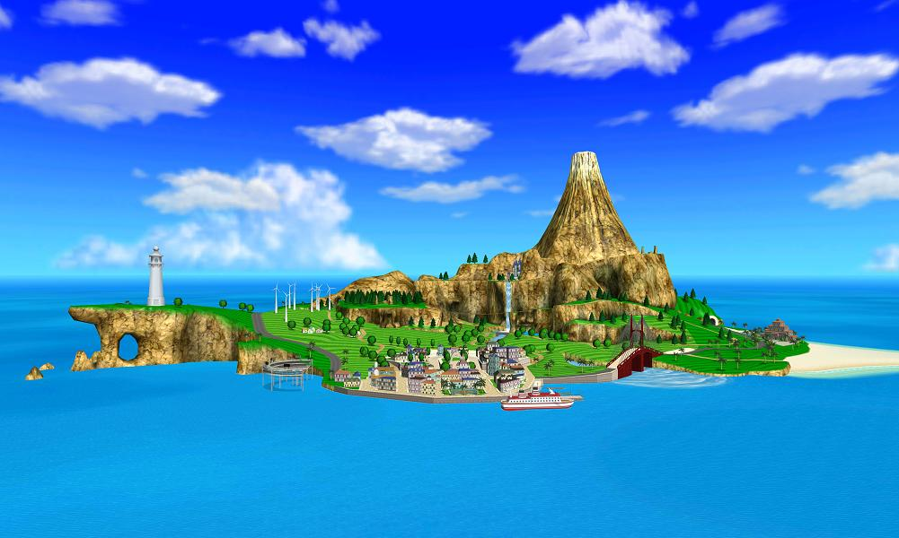

Wii Sports Resort
Released on June 25, 2009 as a sequal to the Wii's boxed-in title, Wii Sports Resort featured tons of new minigames all centered around a resort/island theme. The game revolved around Wuhu Island with every minigame taking place on apart of the island. From then on, Wii Fit Island was now known as Wuhu Island after a few tweaks to the map.
Wii Sports Resort came included with the new Wii Motion Plus accessory (later, built directly into the wiimote's) which gave the Wii controllers more precise control. Wii Sports Resort featured 12 unique mini games, 7 more than the original Wii Sports title. Golf and Bowling returned in Wii Sports resort, both with new gameplay and enhanced features to make these the definitive version of their respective sport on the Wii.

Wuhu Island from Wii Sports Resort - Source: Here